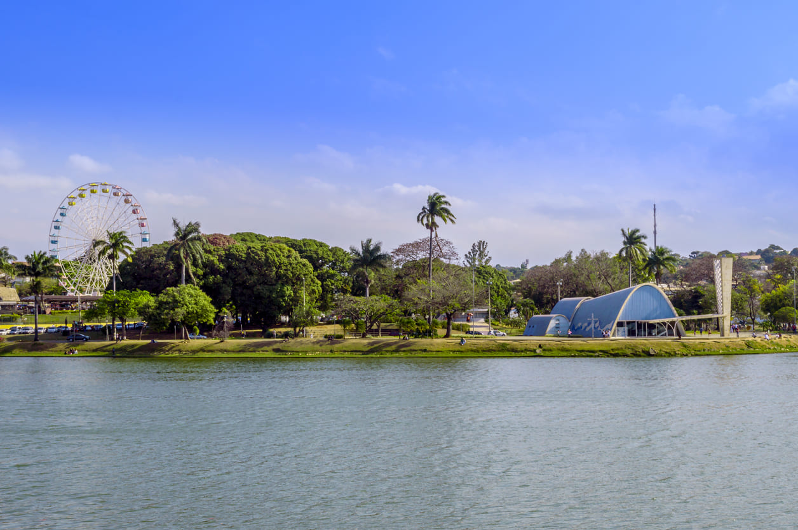
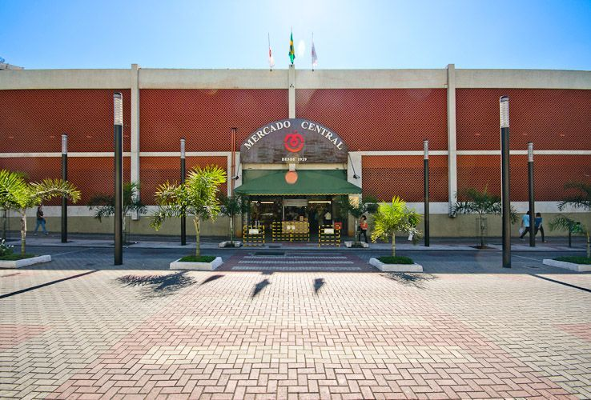
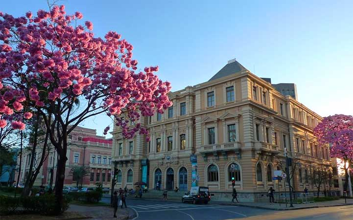
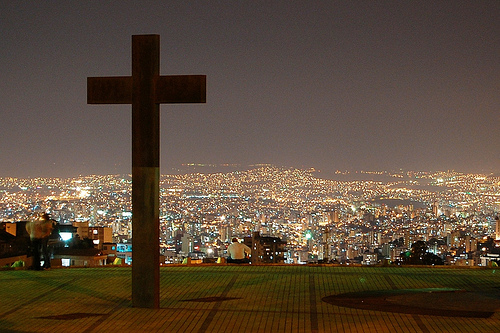
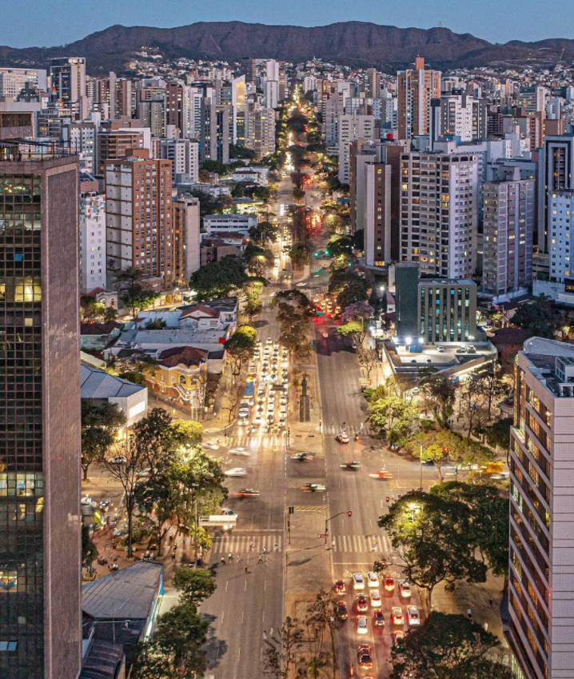
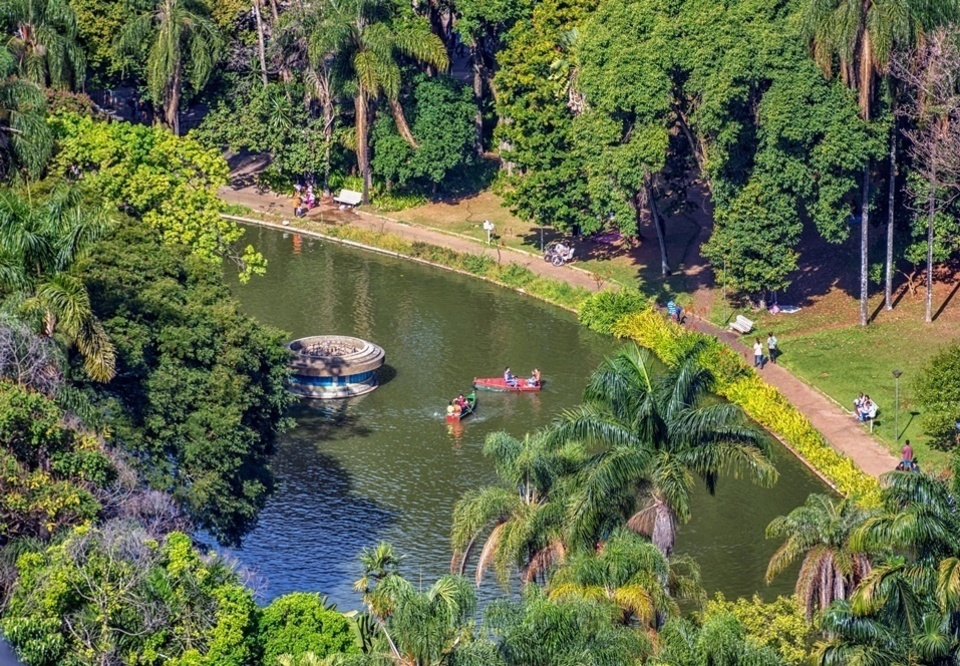

Como Jogar
Controles:
• Toque/ESPAÇO para pular.
• Pule uma vez para obstáculos baixos.
• Evite os obstáculos aéreos para não perder o ritmo.
Mapa Turístico:
• Pampulha: Capivaras e Pássaros.
• Mercado: Ônibus e Pombos.
• Liberdade: Bancos e Borboletas.
• Papa: Cones e Drones.
Dica: A cada 100 pontos, o cenário muda!
Quem vai correr?

Pão de Queijo

Cafézin
FIM DE JOGO!
Recorde: 0
Pontos Turísticos
Circuitos Principais

Circuito Pampulha
O marco modernista de Oscar Niemeyer. Um complexo deslumbrante à beira da lagoa, Patrimônio da Humanidade pela UNESCO.

Mercado Central
A alma gastronômica de Minas. Cores, sabores, cachaças e queijos em um labirinto eleito um dos melhores mercados do mundo.

Circuito Liberdade
O maior polo cultural integrado do Brasil. Antigos palácios neoclássicos que hoje abrigam museus imersivos ao redor de uma praça icônica.

Praça do Papa
Localizada aos pés da Serra do Curral, oferece a visão panorâmica mais emblemática da cidade, batizada em homenagem a João Paulo II.
Conheça Mais Lugares

Avenida Afonso Pena
A espinha dorsal de BH, planejada no século XIX. Um corredor histórico com arquitetura eclética e árvores centenárias.

Parque Municipal
O coração verde no centro da metrópole. Inspirado na Belle Époque, conta com lagos românticos, teatros e imensa biodiversidade.

Feira Hippie
A maior feira de artesanato a céu aberto da América Latina. Ocupa a Afonso Pena todos os domingos com arte, moda e comida.
Indicações de Famosos

Melhores Momentos Expandidos
O teto reformado e as brigas

Gaba - 24h Comendo em Botecos
Focado apenas em estufas e petiscos tradicionais em BH

Grazi Eats - 24h Comendo Tudo
Mostrando o clássico Caol, a Pão de Queijaria e Mercado Central

Bruno Baroni - React de 24 horas
React e análise médica/alimentar de 24 horas em BH

Gozando a Vida - O Guia Definitivo
O Guia Definitivo de onde comer a verdadeira comida mineira

Gaba - 24 Horas Comendo
24 Horas Comendo em BH (Episódio 1)

Gaba no Mercado Central
Um Dia Inteiro Comendo no Mercado Central

Mohamad Hindi - Guia Gastronômico
48 Horas Comendo em Belo Horizonte

Mohamad Hindi - Botecos Mineiros
As Comidas dos Botecos Mineiros

Eai Bora - Mercado Central
24h Comendo no Mercado Central (Shorts)